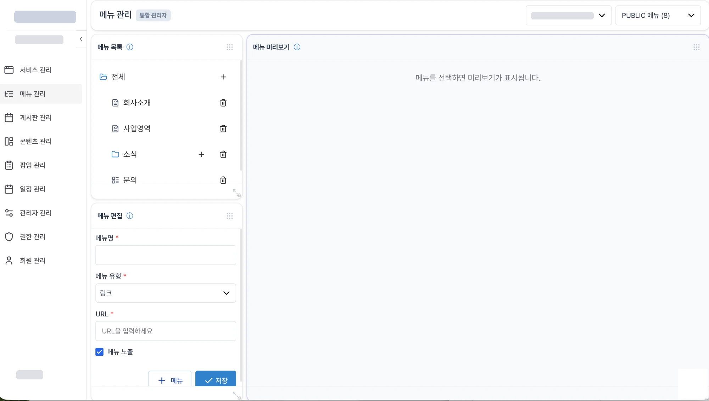
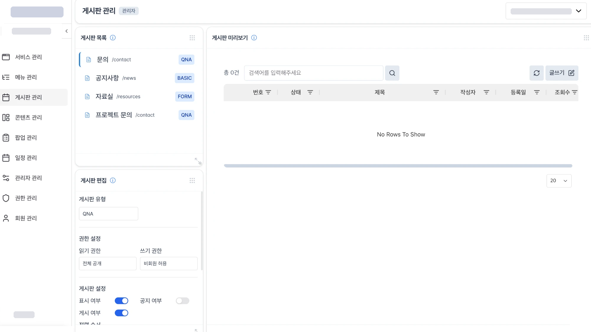
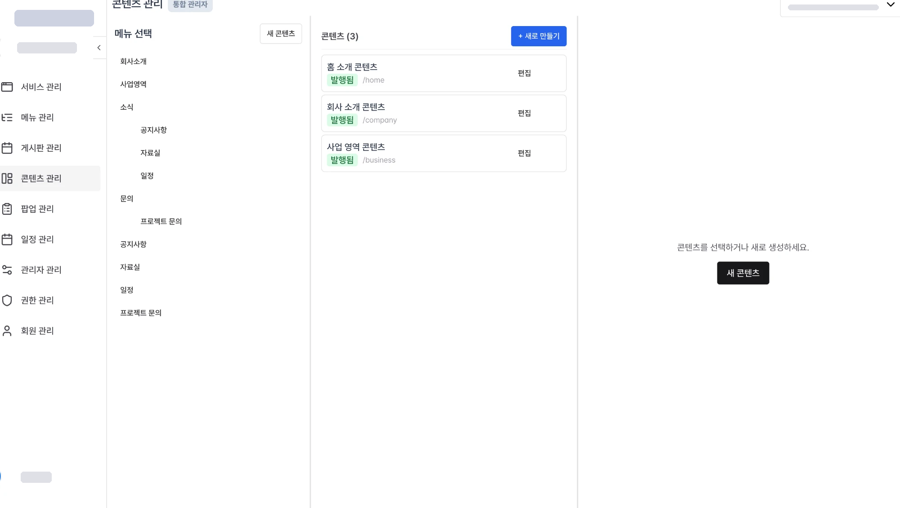
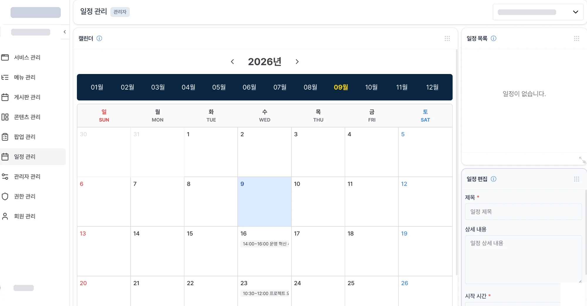
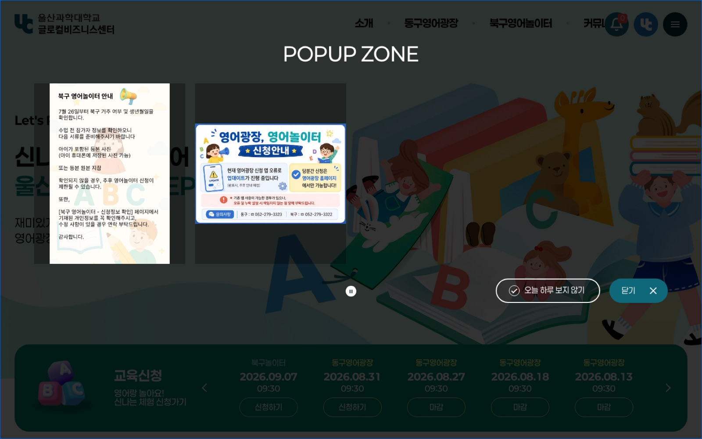

Case 04 통합형 홈페이지 관리 CMS · 핸디 · 2024.08 – 2025.05
반복되는 기능은 공통으로,고객의 요구는 따로.
고객사에 납품하는 홈페이지마다 반복되는 관리 기능을 공통 CMS로 먼저 세우고, 예약·신청처럼 고객마다 다른 요구는 추가 범위로 구분해 기획했습니다. CMS 구조와 관리자 IA, 화면과 흐름, UI/UX를 맡았고 개발 결과를 검수했습니다.
- 기간
- 약 10개월 · 2024.08 – 2025.05
- 팀
- 핸디 개발1팀 — 기획 · 디자인 · 개발
- 내 역할
- 서비스기획 — CMS 구조 · 관리자 IA · 화면과 흐름 · UI/UX 디자인 · 검수
- 범위
- 공통 — 서비스 · 메뉴 · 게시판 · 콘텐츠 · 팝업 · 일정 · 관리자 · 권한 · 회원 / 고객별 — 예약 · 신청
- 적용
- 핸디 고객사 홈페이지 — 예: 울산과학대학교 EPL(교육신청)
01
같은 기능도 매번 처음부터
홈페이지를 납품할 때마다 회원가입 · 게시판 · 팝업 · 메뉴 같은 기능은 반복됐지만, 요구는 고객마다 조금씩 달랐습니다. 어디까지를 공통으로 두고 어디부터 고객별로 볼지 정하지 않으면, 기획과 검수가 매번 새로 시작됩니다.
경계를 먼저 긋는 일이 이 프로젝트의 첫 기획이었습니다.
02
공통을 먼저 세우고, 고객별 요구를 얹다
왼쪽 메뉴가 곧 공통 범위입니다 — 서비스 · 메뉴 · 게시판 · 콘텐츠 · 팝업 · 일정 · 관리자 · 권한 · 회원. 고객마다 달랐던 게시판 요구는 유형(QNA · BASIC · FORM)과 읽기·쓰기 권한, 표시·공지 여부 같은 설정으로 흡수했습니다.
예약 · 신청은 고객별로 다르게 붙는 범위로 두었습니다. 공통이 먼저 서 있으니, 고객과의 대화는 “무엇을 더 붙일지”로 좁혀집니다.
기능 범위를 설명용으로 재구성한 도식
Admin 공통 기능의 관리자 화면 — 왼쪽 메뉴가 곧 공통 범위




핸디 통합 CMS 관리자 화면 · 로고 · 계정 · 서비스명은 이미지에서 가림 · 파란 밑줄은 포트폴리오 표시
03
경계가 검수의 기준이 되다
개발 결과를 검수할 때도 같은 경계를 썼습니다. 공통 기능은 공통 기준으로, 고객별 추가는 그 고객의 흐름으로. 검수와 개선사항 관리가 매번 처음부터 시작되지 않게 됐습니다.
울산과학대학교 EPL처럼 신청이 핵심인 고객 사이트가 이 구분의 예입니다. 공통은 이미 서 있고, 그 고객에게 중요한 신청 흐름에 기획과 검수를 집중했습니다.
Custom 고객별 추가 범위 — “신청”이 쓰이는 자리

1교육신청 — 이 고객에게 핵심인 기능2회차별 신청 · 마감 — 공통 위에 얹은 고객별 흐름epl.uc.ac.kr 운영 화면 · 파란 밑줄은 포트폴리오 표시
Result 결과와 배운 점
- 기획 기준공통과 고객별의 경계가 기획과 검수의 기준이 됐습니다.
공통 기능은 먼저 구성해 두고, 고객별 요구는 추가 범위로 다뤘습니다.
- 실제 화면메뉴 · 게시판 · 콘텐츠 · 일정 관리자 화면이 구현돼 운영됩니다.
위 캡처가 그 화면입니다. 게시판 요구의 상당 부분은 유형과 권한 설정으로 흡수됐습니다.
- 배운 것반복을 공통으로 만드는 일은 개발이 아니라 범위 결정에서 시작한다.
이 경험이 개인 프로젝트의 운영 콘솔을 설계할 때 출발점이 됐습니다.
Back 메인으로
프로젝트 목록 ←Case 05 다음 사례
핸디 협업 운영 →